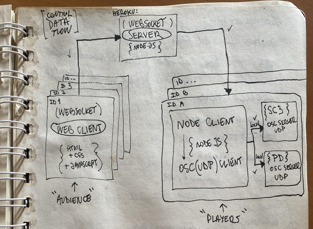
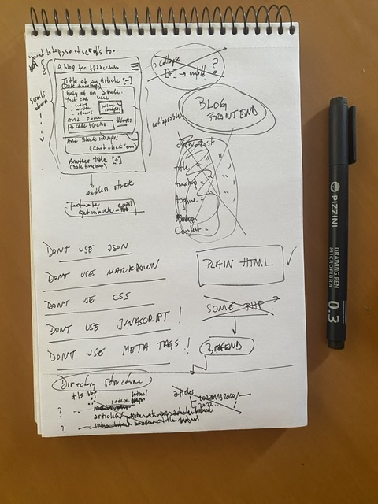

I'm a composer and a programmer, head over to my other website where I share my art stuff: fdch.github.io
This is a blog where I post various thoughts, things I've learnt, and random ideas. I'm writing it in plain
html right on the github editor, so please mind the typos here and there (and the ugglyness)
The text
first node, first code's tail
second nodesecond node's tail.
Also, we can have a
third code elementwith another tail...
I started a database 💽 of everything I do 👽 (Part 1)
I started a database 💽 of everything I do 👽 (Part 1)
This is one of those things that you end up regretting. I don't recommend it but it was fun.
It all began with a doctor's appointment and an early stage hypertension diagnosis.
Probably, all those ibuprofen I took over the years, or simply genetics, some sort of mild covid aftermath (though I never tested positive). Who knows. Anyhow, doctor said:
exercise, and do not eat salt. Cool, I can do that: started swimming. Then, I just needed to avoid salt (and get a blood pressure monitor). Actually, I need to avoid any food with sodium in it. The problem is that they (ie, food corps) add sodium to pretty much anything: bottled water has sodium, store bought bread has sodium, etc.
There's a whole alter universe of reduced sodium out there.
But, living in Argentina did not make cutting down sodium easy. That is, it is already very hard to be a vegetarian in this so notorious a country for its meat intake and machismo, let alone expect any easy-to-read tag that says:
yo, you can it this, there's no sodium in it, all is good 👍🏼. Reducing sodium proved herein to be a harder task. That aside, food does taste a lot better here than in the US, IMHO.
Hypertension is not only triggered by salt intake. Multiple factors weigh in on the overall tension curve, which is always oscillating. Stress 😓 is one of those factors: having better resources to handling stress definitely helps with high blood pressure. Exercise 🏊♂️ weighs in as a tension regulator, somehow, that is why it is recommended to do so. Anyway, with sodium, we have now three parameters to monitor 🎚 the context of our blood pressure habits. There are endless parameters, however, endless variables on this infinite database contingency that we call life. And I'm only talking about my own life, that is, everything I do in a day.
Do I keep track of how many breaths I take? Sting, I don't! 🐒 Do I know how many milliliters of water I have drank? I might be able to approach that number 🤔 How many popcorns you ate during the film? Well…🍿 Or, how much you sweat? Got me 🤷🏽♂️. In other words, the organicity of our body is uncountable, it is malleable, and it is embedded within an inseparable contextual nature that extends universally from the quantum realm to the nearest black hole, and most likely, beyond. 🪐
I began databasing myself
My life depends on the 🌞 and the 🌙, there is just no way around that. But, I still have hypertension, and I still want to find out the extent to which the things I do and the things I digest have an effect on my blood pressure or not. Hence, I decided to put all of those elements into a database, that is, I began databasing myself.
The project started as a simple logging Google Form, that changed into a more elaborate one. It's kinda cool because the first weeks have some data structure that changes into a different one, all in the same Google Sheet. A nightmare to parse, but it is historically relevant.
Anyway, the database grew at a pace of 15-30 entries a day, and it just kept piling up as you might expect. Some routine like days were simpler; others were trickier. But, I managed to log pretty much anything. It became an obsession. And I like obsessions. To the point that I thought to myself:
there might be other obsessive people like me who would find an all encompassing logger app helpful, sure. That's an idea. But, I liked it to myself. It was just a Google Form and Sheet, felt simple enough.
…and then, I stopped
Three months later, I had a huge pile of data. I have not parsed it yet; haven't drawn any conclusions. I just did that 🙉🐭 database, and then, in the beginning of the year 2022, I stopped updating it. It's been over a month since my last update. I miss it. There was something raw in doing such an extreme and detailed thought work on bodily stuff. I want to parse those numbers and draw conclusions but I need to wait. For some reason, I needed to stop and think. But, I do miss punching in those numbers.
I wrote this post, perhaps to think better, but I did not get to any conclusion as of now and I doubt I will. I guess an apology is in order, towards you, reader. I embarked us on my journey to databasing, only to take us to where you already knew you were. My blood pressure is still high. I still exercise. I eat less salt 🧂🚫. One thing I can say, though, is that food tastes better after going salt-free for more than two months: the tongue feels different because the taste buds go that extra mile to extract flavor out from food to my brain.
To be continued…
Adding Github Actions to this blog
Adding Github Actions to this blog
I went ahead and relaxed a bit with my blog restrictions. In particular, the
No JavaScriptone. We like
JS. However, I was not going to do the whole JSON databasing shebang, fetching, caching, etc…,
like I did before.
I wanted something simpler. I'd heard about Github actions, but always wanted to try. So here's what
I did.
Tinker with a workflow
I added a posts subdirectory in which I place every post I make for this blog. From that directory, I want
Github Actions to pick up all posts and stack them up into the main index file, in reversed chronological order.
Every time a new post is added, I need the index file to be updated. Therefore, this needs to happen on every
push. It boils down to:
Create a directory for your posts
Create a function that updates the index file with the new posts
Execute the update function on every new post
The first point speaks for itself: put new posts in their own html files and in one subdirectory. Now, for
point 2, the
functioncan be written in quite any language. I chose to do this on python, because why
not delve into the rawness of
that html.parser.
Anyway, after a few hours and a few classes later, the
update_posts.pyfunction was finished. It boiled down to three steps:
Grab the index file and clear the section that will include all posts
For every post, grab it and run a pre-formatter, and sort them in reverse chronological order
Stack the posts up on the posts section of the index file
The trick here was to: identify the posts sections in the index file, wrap the individual posts in their own
maintag so parsing is easy, and add a
timetag on each post with the timestamp for sorting.
So, that was it with step 2. It took a while to get the parsing right, but html is such a powerful
and robust way to structure text that it makes things easy; and, Python and strings do work quite nicely
together.
Finally, the gist was setting up a workflow with a yaml file. Here is
the gist:
And voilà, every-time a new post is added to the posts directory this action gets fired up.
So, that was it for blog systems: completely replaced by a script and a set of instructions, and of
course, git and the Github Actions backend 😅
Testing network limits with collaborative music 🌿🎼🎹
Testing network limits with collaborative music 🌿🎼🎹
The pandemic year 😷 was hard on all of us. Lockdowns and travel restrictions have not only affected our own music classes and artistic research, but also profoundly changed music performance all over the world. The problem was that musicians could not meet in the same room to play music with each other. But, one thing was clear: music needed to be made. So, musical performance had to be moved to the network. The result of this was proliferation of software for networked music.
While networked performance —somewhen called
telematic performance— has been around for at least 10 years, it was not until very recently that the audio dev community turned its attention to facilitating new tools for performers to play music together over home Internet connections. I like to think of this move to the network as a media replacement: from air (the preferred medium of musical sound) to electronic (networked music performance media)
🗣 ➡️ 🎤↗️🌎🌍🌏↘️ 🎧 ➡️ 👂
Networks became a new performative space. We have a new opportunity to rethink music and music performance research. For example, we can think of an explosion of networked music performance, with its counterpart being an implosion of sound into the electronic medium. The limits of what we can do in the midst of this huge bang of networked media need to be explored.
1002is a case study of a collaborative networked performance created using a custom software called
CollidePd. The work is meant to be streamed live on a web page that
turns the listener into a performer. On this website, performers connect remotely from mobile devices 🤳or computers 💻 , controlling sounds 🔊 from the same music piece they are listening to. In this way,
1002is an invitation to
anonymouscollaboration in real time with remote performers, without any required musical training 🤯.
The sonic research of this performance is based on the sonification of the musical gesture mediated by the mobile device, emphasizing the participatory movement of the performers.
The tech
The platform is based on a client-server architecture, with a server written in node.js hosted in heroku and two types of clients, one for web written in javascript and another, local, written in node.js.
Here's a diagram

A diagram for the client-server architecture in CollidePd
The local clients are two, each receiving and sonifying with Pure Data or Supercollider as sound engines the data stream from up to 1000 web clients. In this way, web participants choose whether or not to play the same work they are listening to, making this a collaborative and anonymous performance.
Note that these two local clients are optional. The real activity happens online.
The visuals
On the web page there is a visualization of the movement made with the mobile device using yet a separate client that grabs all data from players.
To be continued… (I'm tired and I'll go to sleep 😴)
I reverse engineered 🥷 an analog synth 🎛 into an open source VST 💾
I reverse engineered 🥷 an analog synth 🎛 into an open source VST 💾
TL;DR: I made a VST, you can
get it here. Note: I'm not
making any money from this, it is only intended for educational purposes.
The Encounter
The evening concert was coming to an end in the countryside of a town called Unquillo, not far from
Córdoba,
Argentina. The last band,
Contrafacto, was an underground,
independent, electronic music group that had a very large table
completely covered with analog instruments and cables. When they started it was difficult to differentiate
between sounds, who was making what, and which instrument was making which sound. Complete dislocation
between gesture and sound. But then, I heard it:
The Apollo. It
sounds like this, and looks like the pic below:
The Apollo 1 by Guido Salaya
Did not know what it was first, but I was blown away. I waited until the end of the concert, went up and
congratulated the group, and asked about the synthesizer. It was hard to hide my bewilderment; my eyes
kept
looking at it as if it were some treasure from a paradise lost, a forbidden fruit. I had to have it. It
had to be mine.
The Revelation
A few days went by and I just forgot about Apollo. I continued with my work on
pdpy, I forget what I did, and I watched a few movies. So, I'm
in
the middle of the movie 🎥, Gosling is turning and flipping around trying not to pass out while
stabilizing
a ship, which will be the Eagle upon it's moon landing, and it hit me:
I will buy the synth.
Spinning out of control, I duck-duck-go'ed
Apollo synthonly to find that it was
discontinued.
I became frustrated for a second, just enough to glance at the screen while
Gosling was making the weirdest face😵💫:
I will make it with
Pure Data. I felt alive.
The Research
The Apollo 1is made by Guido Salaya,
an Argentinean independent electronic engineer who designs really incredible analog
synthesizers. From his website, it reads:
GS Apollo I is an analog monophonic synthesizer featuring subtractive synthesis.
Here's
a video of Ernesto Romeogiving it a spin. Luckily,
subtractive synthesis is something I'd done in the past. However, I was decided to make it into a VST
using Pure Data, so I had to make it suitable for
Camomile. From then on, this became a learning
project where I tackled with VST parameters and the internal logic Pierre Guillot, Camomile's awesome
coder, had intended. His docs were really helpful with that 👌🏼.
In addition to learning how to Camomile, I had to get some information about how the Apollo 1 was built.
That is, I needed some diagrams of the electric circuitry involved in it. For this, I looked into the
online manual of the Apollo:
GS APOLLO I
MANUAL DEL USUARIO Descargar en PDFNow, I was ready to start patching.
The Patch
Apollo1 is an open source Pure Data patch that can run inside a DAW using the Camomile audio plugin by
Pierre Guillot. It is a copy of the Apollo 1 Analog Synthesizer by Guido Salaya (GS Music). It is intended
for educational purposes.
The Apollo VST
The DSP design was quite straightforward, keeping it as simple as possible. The ADSR logic comes from Pd's
doc, no extra magic there. The rest is just joining the dots. The main filter was adapted from one made by
Cyrille Henri in 2016, and it was
based on algorythm by Vesa Valimaki and Antti Huovilaine.
Making the VST was quite easy because I was using Camomile, which
isthe VST that loads the Pd
patch I made. The audio core of Camomile comes from the embedded version of Pd called
libpd. Look into that library if you're interested in knowing how it
works. So, making the VST meant changing the patch to which the compiled Camomile VST is pointing. Thus,
all I had to do is grab the Camomile releases and replace the patch (and some other stuff, too, read the
docs for that).
That's that; no magic. Actually, it was quite magical 🧙♂️🎹🎛
How did I start to program?
How did I start to program?
Trying to recall my first program proves way harder a task than I could anticipate. Partly, because my
memory has been giving me headaches as it gets more and more difficult to remember stuff that happened
long
ago 😣
about 15 years, though, I'm not that old.
Added to this tendency towards oblivion, I did not know I was programming at first. I began writing basic
HTML, single-page websites. No styling, just layout, and a few basic PHP snippets of code that I managed
to
copy-paste from one or two tutorials I did not read through. What is more, those HTML pages were copies of
other websites I
hackedaway by copy-pasting the source. That was it for my self-taught
introduction to
programming:
Skim a tutorial and copy some code to get yours working.
And I did not know it as
code, it was just a set of instructions. That could not be Programming.
Needless to say, making websites was something I started doing on my own time, usually at night, while
getting to know the endless depths of that web word wide. That abyss, and insomnia, I'm not sure which
came
first, channelled through a need to understand hypertext, or at least how to use it. The browser was my
entry point to programming.
Those websites, though, were mostly for myself and the people very close to me. As I grew more confident,
I
remember a thrill and excitement when saying, in meetings:
I can do the website if we need one;feelings that usually came along with a frightening thought that people will find out I knew nothing of
web
development. And that was the word,
development, that I was so scared of:
Noo, I am not a
developer. No way. I just know some HTML…I had no idea what being a developer was. I still don't.
By then, I realized CSS was something you needed in order to wash out that horrible HTML. But, it was
strange opening those curly braces, and it was even stranger to do this on a different file (with a
different extension, 😱).
I was certainly in uncharted territories. No way I could keep track of things, let alone
center a
div.
Trial and error, tinkering, tweaking values, searching for answers in incoherent blobs of instructions,
not
getting it. 😙 Those were the times, the good old times. I did not know what a console was. Ah, those
mysterious endless hours of incomprehensible magic, sorceries of the source. Then, in a fog of
incalculable
depth, I stumbled across some scripture, or some piece of text instructions that went into a script tag
that
made things on the screen do other things, move around, change. Websites became alive, dynamic,
interactive.
Ah, such wonders of the script. I panicked. Stopped doing websites because I was not doing them right. I
needed to learn JavaScript but I did not know how.
Dale
At that point, it was when I realized that different languages serve different purposes. HTML was meant to
structure text on a page; CSS, to stylize the elements of that structure; JavaScript, to make magic 🤔. I
also realized that all my knowledge of these languages depended on browsers. That is to say, the power of
those languages was limited to what the browser could do.
When I began to realize that I needed to work outside the browser, I delved into Pure Data, a graphical
programming environment for music and the arts. Pd is written in C and it changed my life. I could draw
connections between objects (ie., I patched stuff) that would result in combinations of notes, generation
of
a sound, automated control of an audio or visual effect, and much more. I was handed so much potential for
multimedia, interaction, and expression that working with Pd became my favorite thing in the world. I was
no
longer HTML-ing in the depths of night, though I most often patched heavily into daybreak. I was patching
during the day, while waiting, on the subway, bus, airports, bars. Basically, every moment of the day was
a
chance to learn more.
I did this patching thing for a year or two, until suddenly my advisor showed me not how to patch an
object,
but how to make an object. He called them
externals. I did not quite get what he could possibly
mean. I
realized then that I was taking software for granted. All my life, I did not know you could make stuff.
So,
he opened up a text editor, wrote some stuff in the C language, and inputted some words on a terminal
console. The result was astonishing: a new object, the one he'd just created, was there, ready to be
connected to other objects. What is an object? I had no idea. I just used them. And now I would make them.
My advisor lent me a copy of
The C Programming Language, and I went home in awe.
The C Programming Language. I read the ANSI-C version, though, waaay fancier 😉.
From then on, I never looked at Pd, JavaScript, or any other programming language the same as before. I
could learn anything, from Python to C#, from awk to C++, from bash to React. And that did not stop there,
no. Any software was easy to grasp, any operating system.
In sum, I cannot remember exactly when I started to program, but I do remember an obsession that grew hand
in hand with my fascination of the Internet, computers, and code.
Making a blog with your 📱
Making a blog with your 📱
Today, I decided to make a blog with my phone and a Github account.
Here are the steps that I took to achieve this.
Step 1: Design a super cool front end 😎
This is absolutely necessary so as to get all your ideas in order, and to Make things exactly as you want
them rather quickly.
Here is the result:

Designing a cool front end in pen and paper
Step 2: Make a new repository on Github
Using the web interface: Add a Readme if you want to.
In my case, once the design was layed out, I went ahead and scratched out
Everything that I thought unnecessary. Hence, there was a lot of stuff like:
Don't use (json, JavaScript, markdown, etc) and a ✅ for
plain HTML.
Step 4: Create an index.html file (the one you are reading now)
This file is the only page you live edit, while readers view it (🤦🏽)
This is not that bad, and it is quite thrilling. On one hand, my mistakes are exposed immediately, and
reading a messy blog is not nice. However, this makes me think really hard about content and layout. I
must
have a very clear idea 💡 about what to write and how to write it first, so then I can type it out and
place
the cumbersome html tags to display it in a readable way...
ok, this is questionable,
sue me
One thing I found out about is the
detailsand
summaryHTML tags, which made
collapsing and unfolding possible, and only using html! Fabulous. 🤷🏽♂️
Isn't it cool 🙁?😒
Step 5: Create an style.css file
At his point your blog looks amazing, well done 👍🏼
For the style, I went with a
colorblind safe
palette🎨, used in dark mode,
And I might change the feel eventually. For now, I just wanted something quickly to get it out there.
Step 6: Make a first post
And here it is. Well, the second one ☝️, the first
One is just a blab about what this blog is. This one is cooler, it has a picture and all.
I really liked the picture trick there. I just 📸, upload one to Github as a file. Then I copy the path,
Come here, and paste it in the
srcfield of the img tag and voilà, I'm the New York Post
This is a lighthouse in Córdoba, Argentina, a landlocked city. A useless lighthouse.
That's it! I now have a blog.
What's fun is that there is: No js ☹️, no php 🥲, no frameworks 😅;
It took less than 2 hs to get it running and write this post 🤩.
Now it's just a matter of continuing it... 🙃
the main title of the self explanatory post about a custom made markup language
the main title of the self explanatory post about a custom made markup language
Every time you start a new line and place some text, you start a paragraph like this one.
If the line is preceded by
|, then it becomes an indented block, like this one.
You can add ordered or unordered lists, like in markdown, minus the sub items. Here is an ordered list, followed by an unordered one:
1. First
2. Second
3. Third
⁃ some element
⁃ Another element
⁃ Yet another one
This is a subtitle
writing code
To write a subtitle, all you need is to start the line with
subtitle:and begin your subtitle. Only subtitles are allowed, ie. no subsubtitles.
Code blocks or inline code snippets work just like in markdown. For inline code, you surround it with a backtick \` , and for code blocks you place an opening and closing set of triple \` in new lines.
Optionally, on code blocks you can specify the code language on the opening tag, but I have yet to include a code styler with neat syntax highlighting.
images
This is Wikipedia’s picture of the day: The Reverend Robert Walker Skating on Duddingston Loch, better known as The Skating Minister (1790s), by Henry Raeburn
To include images, you can use the
image: url | caption | titletag. You must include any url. After the url, you can include an optional caption, and an optional title, separating those with the
|character. Here’s an example:
plain HTML input
Some Markdown interpreters allow for HTML input. However, these tend to be limited to a subset of the language. For this reason, and because I am using such fancy tags as
detailsand
summary, I included HTML elements within the parsing. There is no validation, though, so if it goes wrong, it’s up to the
ElementTree.fromstring()method to figure out. I’m not accountable for such sorcery.
In any case, here’s an example of a small article:
my title
A paragraph
more
Here’s that hidden details I like so much… hah
Actually, the script will fail and there’s just no way to catch that now... that is, besides checking the Github workflow log for errors.
The above looks like this:
my title
A paragraph
moreHere’s that hidden details I like so much… hah
comments!
Markdown has no comments but I included a comment feature, following JS and C (inline) comments. Thus, lines beginning with
//are converted to HTML comments.
PS: There's a comment in this section of the post, go to the html file to see it rendered, or to the
.txtfile to read it.
meta description tags
One cool thing about this is that you can include meta tags with simple syntax. These are:
⁃
title:anything after this becomes the main title of the post. If this title is missing, the first subtitle is taken as title.
⁃
description:Anything after this tag is the post’s meta description, which should be less than 200 characters. If this description is missing, the first paragraph is taken as such.
⁃
keywords:a list of comma-separated key words relevant to this post comes after this tag.
⁃
time:A timestamp in the form of YYYY-MM-DD HH:MM:SS and an optional written-out version,separated by a
|comes after this tag. For example:
time: 2022-01-25 10:15:12 | Cloudy ☁️ Wednesday morning